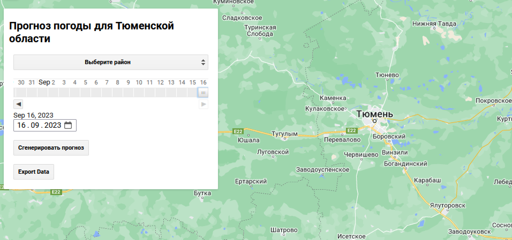
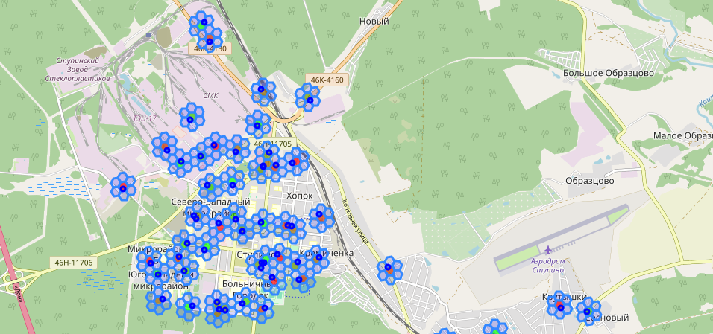
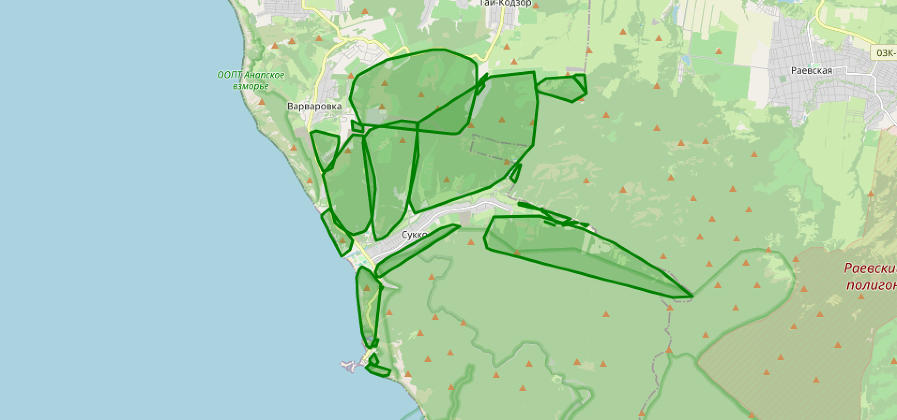
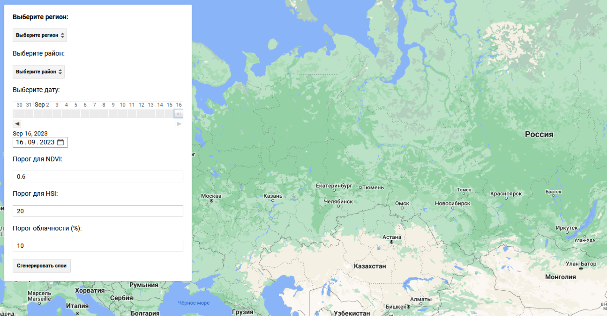
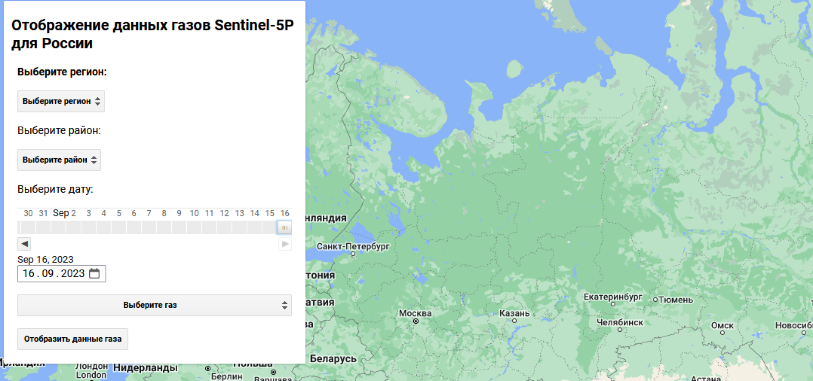

Akbulat Fazliev
GIS Developer, GIS & geodata/spatial data analyst, development of
interactive maps, dynamic changes, python development, interested
in machine learning and AI powered tools. I am leading project
team of geoanalytics, 3D engineer and GIS analysts in the field
of business consulting.
geodata ingeneer
Динамическая интерактивная карта газов на основе данных
Sentinel-5P. Приложение так же создает графики динамики концентрации
газов на выбранную территорию за месяц до выбранной даты.
Gas Map of Russia
Создание слоя-маски для потенциальных очагов борщевика. Методика
заключается в подборе значений NDVI и HSI (яркость) для Вашей
области интереса.
Hogweed Analyst
Прогноз погоды по данным NOAA на территорию Тюменской области.
Tyumen Weather Analysis

Описание для Hexgrid Map
Hexgrid Map

Описание для Geocoded Map by Sectors
Geocoded Map by Sectors



ArcGIS
Mapbox
GEE
Python 3.10
компания
2022 - настоящее время
Моими задачами были geodata, spatial data, analysing, development of
interactive maps, dynamic changes, python development, interesting
in machine learning and AI powered tools. geodata, spatial
ArcGIS
GEE
Python 3.10
компания
2017 - 2022
Моими задачами были geodata, spatial data, analysing, development of
interactive maps, dynamic changes, python development, interesting
in machine learning and AI powered tools. geodata, spatial